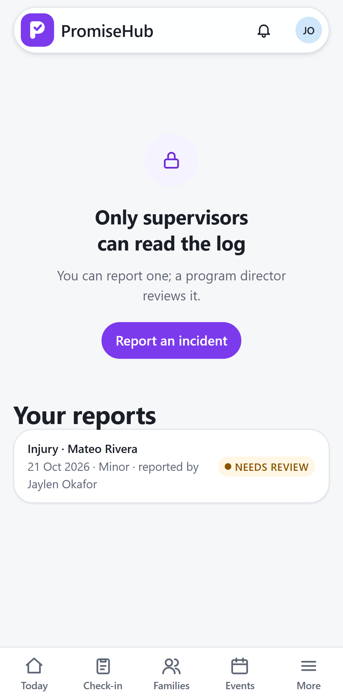
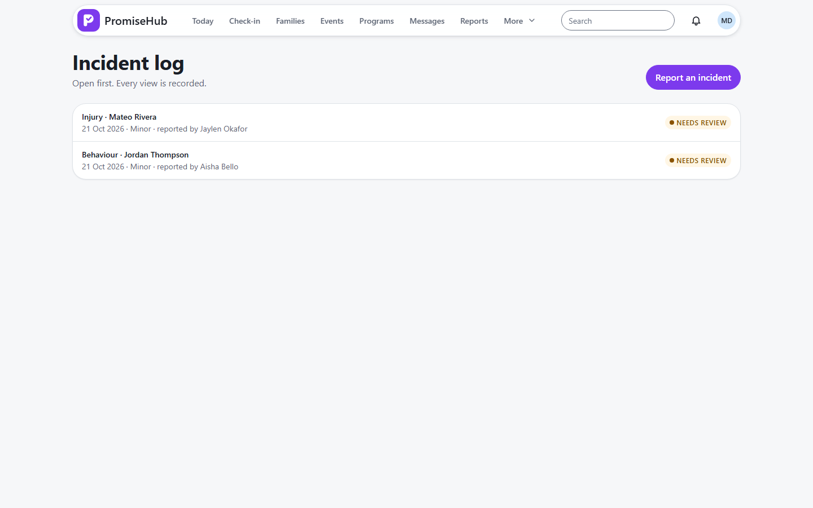

PromiseHub · Video 19
Report an incident
The facts, while they are fresh, to the people who must know
The facts, while they are fresh, to the people who must know
Needs review, sent to Marisol.


| Case | Answer |
|---|---|
| Missing facts | 422, each named, nothing saved |
| Complete report | Needs review, emailed, audited |
| Someone else's report | 404 |
| Another organization / module off | 404 |
Next: reviewing the report